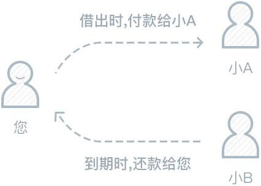

您和小A都是小B的好友，小B在借贷宝上借款筹措购房资金，小A借给了他10万元，成为他的出借人。
一个月后小A急需现金购买一辆奥迪轿车，他选择使用“转让变现”功能，通过转让小B的借款来收回资金， 转让发布后您和小B的其他好友就看到了这笔带“转”字的借款。
 由于利率可观，您决定出借。您的钱会付给小A，小A相当于提前收回了资金，而您取代小A成为新的出借人，借款到期时，小B将直接向您归还本金和利息。
没有区别，到期后借款人将按照借款协议约定的利率归还本金和利息。 您只需关注以下两点，便可以放心出借： a.借款人是否值得信赖 b.利率是否满意
当然可以，在“钱包-借出列表”中选择要进行转让的借款，点击转让变现按钮，设置一个合理的转让利率/价格，就可以静候资金变现到账啦。
同样用上文中的例子，小B筹措资金的时间相对宽裕，设定的利率为12%，而小A为了能够尽快借到购车资金，愿意补贴部分利息，因此设定的转让利率为15%，也就是您所看到的利率，到期后您将按小B设定的利率收回本金和利息。